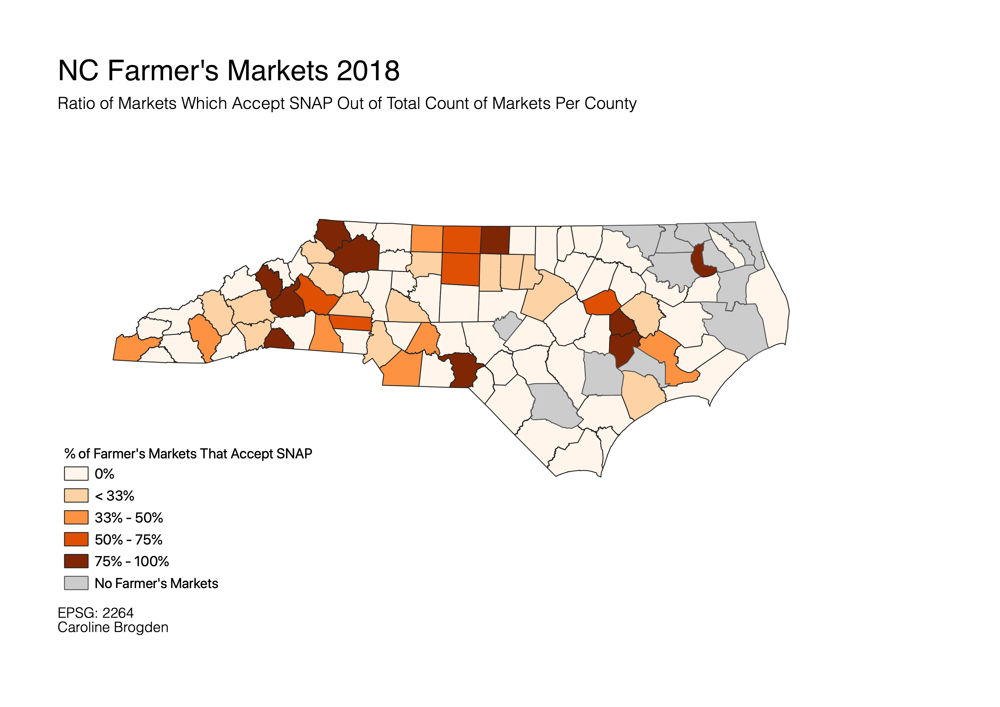

Homework 9: NC Farmer's Market Data 2018
Caroline Brogden
Ever wondered how many farmer's markets in NC accept SNAP? SNAP is the US' largest food assistance program, and at the beginning of the pandemic, the federal goverment broadened eligibility and participation requirements to meet growing emergency food needs. States' responses to flexibile SNAP standards vary and remain uncertain going forward. The following map presents the percentage of farmer's markets in all 100 NC counties that accept SNAP out of the total number of farmer's markets. I used natural breaks (jenks) to classify the data, because it follows the data's natural distribution. Based on this first map, it appears that a higher percentage of farmer's markets in Western NC accept SNAP than in other regions. This is still a potentially misleading narrative, despite classifying the data according to natural distribution.

After toggling through different classification options and deciding to use natural breaks, the choropleth still missed some of the nuance in the data, as mentioned above. To add context, the total count of farmer's markets are labeled in the following map. Consequent interpretation addresses how counties where all the farmer's markets accept SNAP may have only one or two total farmer's markets; county level analysis of SNAP benefits at farmer's markets - which constitute one tiny component of (in)secure food networks - may be more appropriate.
Data used for this project:
CSV dataset cleaned for joining
Link to download Food Environment Atlas data from USDA, which contains the data used in the cleaned CSV.
Shapefiles for NC counties from NCDOT.